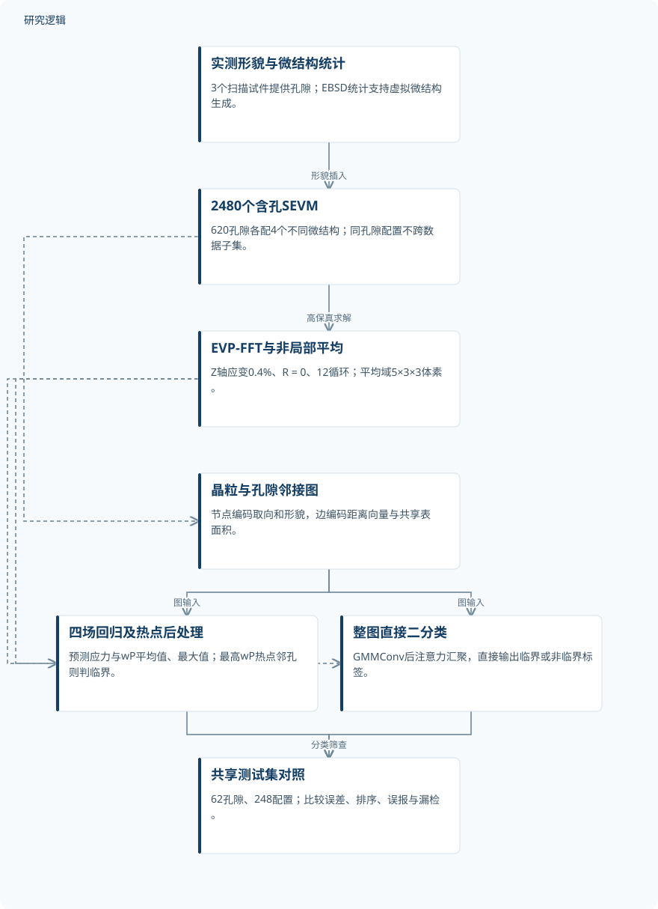
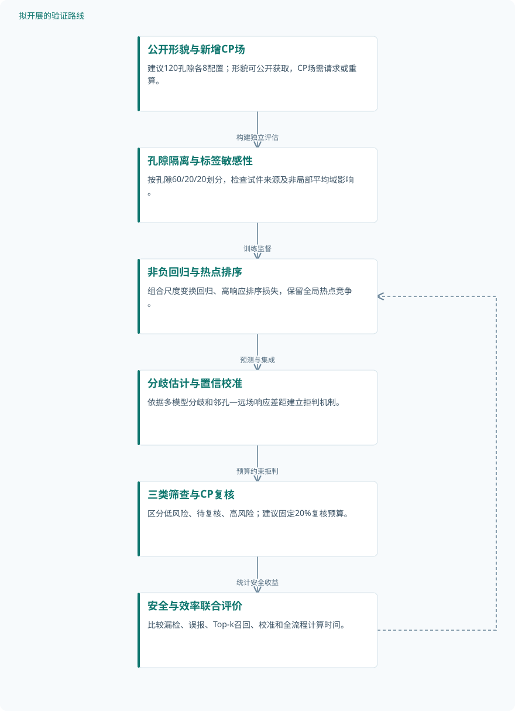

论文精读
基于图神经网络的晶粒级微观力学建模与疲劳关键孔隙评估
Grain-level micromechanical modeling and assessment of fatigue-critical pores using graph neural networks
精读更新 2026-10-03 16:36 · 依据论文全文整理
增材制造金属中的孔隙，究竟何时会成为疲劳裂纹的首发位置？答案不仅取决于孔隙大小和形状，还取决于邻近晶粒与远处竞争热点的力学响应。Loiodice等提出GFF-MAP，用晶体塑性仿真训练图神经网络，将昂贵的微观力学计算转化为快速孔隙筛查。本文值得关注的，不只是计算提速，更是场预测、热点排序与可靠筛查之间尚未打通的证据链。
文章目录
孔隙危险性不能只由几何决定
疲劳实验成本高、周期长，晶体塑性能够解析微结构敏感的损伤机制，却同样面临计算和数据处理负担。晶粒平均响应容易掩盖局部极值，而控制裂纹萌生的恰恰可能是孔隙边缘或其他位置的塑性集中。因此，研究目标不是发现孔隙，而是判断它是否胜过其他应力集中源，成为整个微结构的疲劳热点。
论文聚焦增材制造IN718内部孔隙，比较保留微观力学场的回归路线与直接二分类路线。这里的“临界”是晶体塑性热点位置定义的标签，并非实测裂纹或寿命结论。本站判断，其价值在于为高保真分析提供筛选入口，而不是替代疲劳试验完成可靠性认证。
从体素微结构到可学习的晶粒邻接图
DREAM.3D依据已发表EBSD统计生成等轴、随机织构的虚拟微结构，采用晶粒尺寸分布50.5 ± 58.9 μm，并忽略孪晶界。每个立方体为112³体素，分辨率3.516 μm/voxel，约含900个晶粒；实测孔隙置于中心。EVP-FFT施加Z轴单轴应变0.4%、R = 0及12个循环，X、Y方向气相填充模拟自由表面，Z方向外延边界晶粒后将其剔除。
式(1)将各滑移系分解剪应力与剪应变率的乘积沿循环积分，式(2)跨循环累加，得到塑性应变能密度wP。训练目标取最后一个循环峰值处的场，并采用5×3×3体素非局部平均。全微结构最高wP位置所在晶粒若直接邻接孔隙，该配置便被标为临界；这种定义识别的是竞争热点，不是经标定的寿命。
图节点包括晶粒和孔隙，边表示物理邻接，特征编码取向、形貌、质心连接向量及共享表面积。GMMConv通过边属性上的可学习高斯核分配邻居权重；四个回归模型逐节点输出σZZ和wP的平均值、最大值，分类模型则注意力汇聚后输出整图标签。应力、wP和分类分别使用MSE、Smooth L1及focal loss，但这些物理相关输入不等于显式守恒约束。
GFF-MAP：由晶体塑性监督到孔隙临界性筛查


两条路线共享按孔隙隔离的数据；临界标签来自CP热点位置，不代表实测寿命或裂纹验证。
下载 SVG图示关系说明
实线表示相邻阶段的信息流，虚线表示跨阶段联系或反馈。
实测形貌与微结构统计 → 2480个含孔SEVM：形貌插入；2480个含孔SEVM → EVP-FFT与非局部平均：高保真求解；2480个含孔SEVM → 晶粒与孔隙邻接图：图转换；EVP-FFT与非局部平均 → 四场回归及热点后处理：场监督；EVP-FFT与非局部平均 → 整图直接二分类：热点标签监督；晶粒与孔隙邻接图 → 四场回归及热点后处理：图输入；晶粒与孔隙邻接图 → 整图直接二分类：图输入；四场回归及热点后处理 → 共享测试集对照：回归筛查；整图直接二分类 → 共享测试集对照：分类筛查
620个孔隙，而非2480个独立实测样本
孔隙形貌来自3个实物试件的断层扫描，选取620个孔隙，覆盖等效直径15–45 μm和球形度0.325–0.650。每个孔隙配四个不同虚拟微结构，共2480次仿真、约200万个晶粒，五个模型共享这套数据。训练、验证、测试分别包含496、62、62个孔隙，同一孔隙四种配置不跨集合，但是否按原始试件隔离及额外增强数量未报告。
验证以晶体塑性结果为真值，分别考察全部测试晶粒和孔隙邻接晶粒，并在248个测试配置上比较两条筛查路线。平均应力相对L2误差为4.1%，最大wP为57.9%，后者Spearman ρ仍达0.749，说明幅值拟合与排序能力并不等价。作者评估过其他图卷积算子并筛选数百种配置，但所给资料没有定量算子对照、完整消融或重复训练区间。
| 验证任务 | 样本与规模 | 主要结果 |
|---|---|---|
| 四类晶粒微观力学场回归验证 | 共享620个实测孔隙、2480个不同SEVM和2480次仿真，约200万个晶粒；每孔隙四种配置，不是2480个独立实测孔隙。 | 按上述任务顺序，全部晶粒的ē/R²/ρ为4.1%/0.909/0.951、6.0%/0.758/0.864、59.3%/0.557/0.797、57.9%/0.471/0.749；邻孔晶粒为5.1%/0.862/0.932、10.2%/0.533/0.743、48.7%/0.632/0.834、57.9%/0.390/0.726。图2a平均应力R²标为0.900，与正文不一致。 |
| 回归后热点筛查与直接分类对照 | 测试62个孔隙、248个SEVM配置；图6两矩阵均包含55个临界和193个非临界配置，不能按配置数计算独立孔隙数。 | 回归正文四指标为79.8%、81.1%、51.8%、63.2%；图6a为80.6%、81.8%、54.2%、65.2%，TN/FP/FN/TP=155/38/10/45。直接分类为69%、80%、40%、53.3%，计数127/66/11/44。 |
| 孔隙几何与邻近微结构依赖性分析 | 全数据620孔隙各有四种配置；测试分析62孔隙。直径分组和配置一致性分组的精确孔隙数量未报告。 | 直径小于25 μm的孔隙中88%始终非临界；直径增大、球形度降低时临界比例总体增加，配置依赖孔隙更难分类。 |
展开数据来源、分组、对照与验证边界
四类晶粒微观力学场回归验证
数据来源。AM IN718含孔SEVM的EVP-FFT场为真值；孔隙来自3个扫描试件，微结构来自EBSD统计，目标经过非局部平均。
分组与工况。σZZ,avg、σZZ,max、wP,avg、wP,max四任务；分别评估全部晶粒及孔隙邻接晶粒。统一Z轴应变0.4%、R = 0、12循环。
数据划分。训练496孔隙/1984仿真，验证62/248，测试62/248；同孔隙配置不跨集合，直径与球形度分布平衡。试件级隔离未报告。
对照与消融。CP场为高保真真值；评估GraphConv、SAGEConv、GATConv、NNConv后选GMMConv，定量比较与逐项消融未提供。
评价指标。相对L2误差ē=||y−ŷ||₂/||y||₂×100、R²及Spearman ρ；σZZ单位MPa，wP单位MJ/m³。
验证边界。低于10^-2 MJ/m³的wP,max通常被高估，孔隙及自由表面附近偏差较大；完整最优配置在未提供的补充资料中，重复训练及置信区间缺失。
回归后热点筛查与直接分类对照
数据来源。共享CP数据及划分；最高wP热点位于孔隙直接邻接晶粒时标为临界正类，标签不是实测裂纹萌生结果。
分组与工况。回归wP,max后寻找全局热点，与整SEVM直接二分类比较；两路线均在同一孔隙四种邻近晶粒配置中评估。
数据划分。沿用训练496孔隙、验证62孔隙、测试62孔隙的80-10-10划分；每孔隙全部四个配置始终属于同一子集。
对照与消融。两条GNN路线互为对照，CP热点判定为真值；未提供纯几何分类器或均匀介质有限元的定量对照。
评价指标。Accuracy、Recall、Precision和F1，以临界配置为正类；同时报告TN、FP、FN、TP以区分误报与安全关键漏检。
验证边界。回归图文指标冲突须保留；两路线均过度预测临界。回归10个假阴性低估邻孔wP,max并转而识别自由表面热点，未发现统一失误模式。
孔隙几何与邻近微结构依赖性分析
数据来源。620个所选孔隙在四种SEVM中的CP临界标签；结合等效直径和球形度分析，测试62孔隙另用于比较GNN判定。
分组与工况。比较四配置始终临界、始终非临界及标签随配置变化的孔隙；正文另区分等效直径小于及大于25 μm。
数据划分。全数据用于几何趋势分析；GNN正确比例分析采用既定测试集，不构成新增训练或外部独立验证。
对照与消融。同一孔隙的四种微结构响应互相比照，CP标签为参考；未提供纯几何模型的独立定量验证。
评价指标。每孔隙四配置中的临界比例及GNN正确判定比例，取0%、25%、50%、75%、100%；直径单位μm，球形度无量纲。
验证边界。四配置比例不是任意微结构下的失效概率；缺少组内统计区间及因果干预，不能把几何主导解释视为已证明机制。
场预测改善筛查，却尚未消除漏检
回归后定位热点优于直接分类，但图6a与正文存在数值冲突：准确率分别为80.6%和79.8%，其余指标也不一致。图中计数支持图示结果，仍不能确定正文数值来源；平均应力R²也有正文0.909与图2a的0.900之差。两条路线都倾向误报，回归路线另有10个漏检，因此较高排序相关性不能等同于可靠的起裂位置预测。
等效直径小于25 μm的孔隙中，88%在四种配置下均非临界，但几何相近的孔隙仍可表现不同。取向在回归特征归因中最重要，直接分类最优特征则不含取向；这支持微结构信息的作用，却不是因果证明。单个微结构的CP计算约6小时，已训练GNN评估少于1分钟，但硬件、重复计时与全流程成本未明确；表面孔隙、孔隙群、跨载荷迁移及新增裂纹实验验证仍未完成。
从这篇论文走向下一项研究
以下为结合研究方向提出的候选方案，实验设计与预期目标有待验证。
面向漏检控制的热点排序与不确定性筛查
问题与短板。现有回归幅值误差较大，热点竞争中的少量排序颠倒便可能漏检临界孔隙。第一步应把晶粒相关性、热点定位和孔隙召回拆开评价，避免平均指标掩盖安全关键失败。
改进机制。建议组合非负能量输出、尺度变换回归和高响应晶粒排序损失，再用多模型分歧触发CP复核。已有回归与排序技术不算新发明，重点是控制竞争热点导致的漏检。
候选创新。候选创新是将邻孔热点与远场热点的预测差距作为拒判依据，同时校准筛查置信度。输出保留低风险、待复核和高风险三类，而不是强迫所有微结构得到确定结论。
数据与实验设计。建议设计使用公开Mendeley孔隙形貌，另请求或重算CP场；选120个孔隙各生成8种配置，按孔隙60/20/20划分。最终测试再检查试件来源隔离，并报告新增仿真成本。
对照与消融。对照原始Smooth L1回归、直接分类及纯几何分类器；依次移除排序损失、取向、非负输出和拒判机制。所有模型共享数据划分，多随机种子重复，按孔隙聚类计算区间。
成功判据。建议预注册固定20%复核预算，要求剩余自动判定的漏检率低于原路线且误报不增加。同步报告热点Top-k召回、精确率—召回曲线、概率校准和端到端时间，而非只看R²。
风险与替代方案。拒判可能把大多数困难样本推回CP，削弱提速价值，CP标签也受平均域影响。应联合改变非局部平均域检验标签稳定性；收益不足时退回高召回预筛与人工复核。
表面距离与加载变化共同驱动的可靠性拓展
问题与短板。当前证据限定内部单孔隙和固定Z轴加载，不能直接指导表面缺陷容限或结构优化。第二条路线应先检验边界与载荷变化，而不是立即把代理输出用于寿命最优设计。
改进机制。建议将孔隙至自由表面距离、载荷方向和应变幅编码进图，重算一致边界条件下的CP场。用条件化消息传递学习热点迁移，再筛选在多工况下稳定低响应的几何候选。
候选创新。DRAGen相关文献摘要已展示含孔隙、织构RVE生成及多求解器接口，不能据此声称生成模型新颖。候选新组合是边界条件化代理、竞争热点验证与稳健缺陷容限搜索。
数据与实验设计。建议设计60个公开孔隙形貌、每孔隙4种微结构，分别设内部与近表面位置、Z轴与倾斜加载，共960次仿真。表面裂纹验证需另采集试件和位置观测，不假定已有仪器。
对照与消融。比较固定工况GNN、条件化GNN、均匀介质有限元和CP；消融表面距离、加载编码与取向。按孔隙隔离，并整组留出一个距离区间或加载方向，检验真正外推。
成功判据。成功判据应是留出工况中热点Top-k召回和临界筛查表现优于固定模型，并经CP复核确认候选几何的改善。若开展实物实验，还须检验裂纹位置一致性，不能由能量降低推算寿命。
风险与替代方案。近表面响应对体素分辨率和边界实现敏感，优化可能利用代理偏差生成虚假低风险方案。应先做分辨率敏感性与高保真复核；外推失败时采用分工况代理，不强求统一模型。
拟议路线：以有限复核预算控制热点漏检


对应第一条研究路线；节点中的样本与评价均为建议设计，尚无实测改善结果。
下载 SVG图示关系说明
实线表示相邻阶段的信息流，虚线表示跨阶段联系或反馈。
公开形貌与新增CP场 → 孔隙隔离与标签敏感性：构建独立评估；孔隙隔离与标签敏感性 → 非负回归与热点排序：训练监督；非负回归与热点排序 → 分歧估计与置信校准：预测与集成；分歧估计与置信校准 → 三类筛查与CP复核：预算约束拒判；三类筛查与CP复核 → 安全与效率联合评价：统计安全收益；安全与效率联合评价 → 非负回归与热点排序：失败模式反馈